
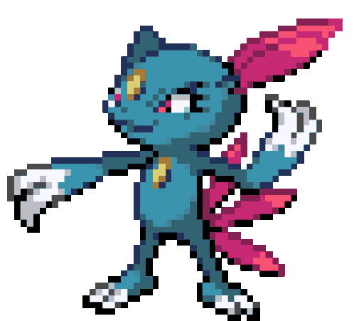
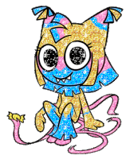
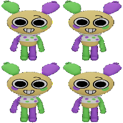
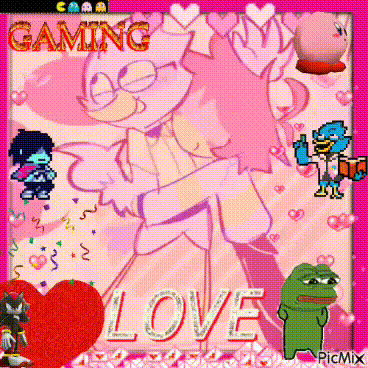
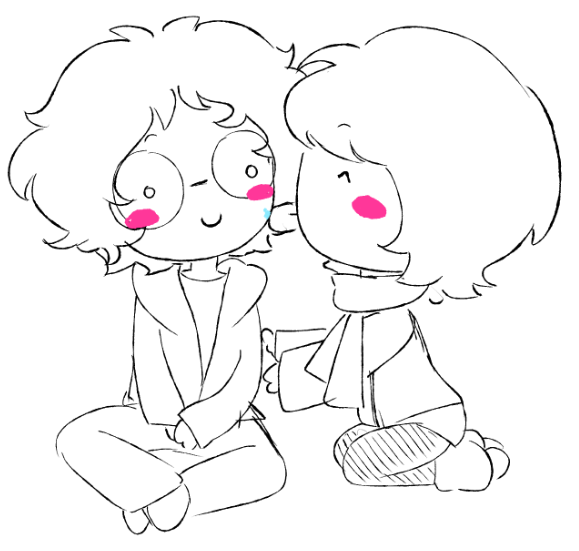
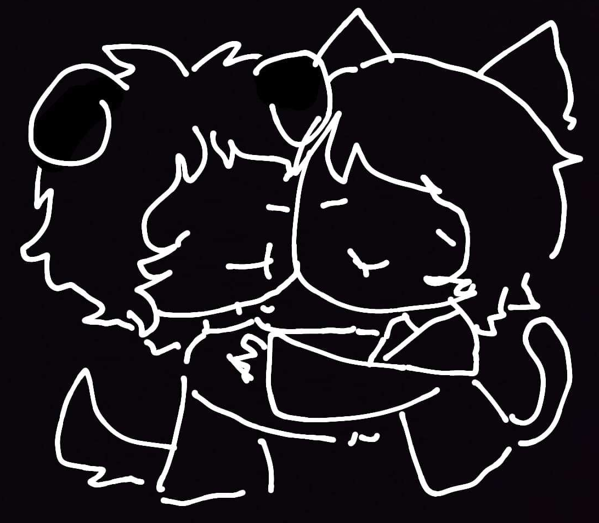
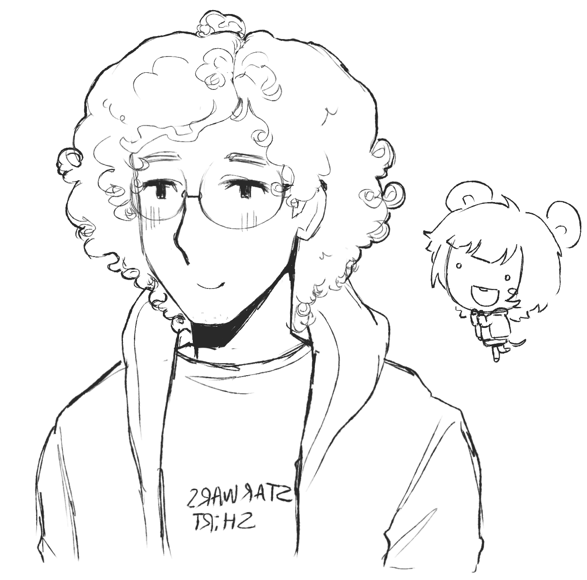
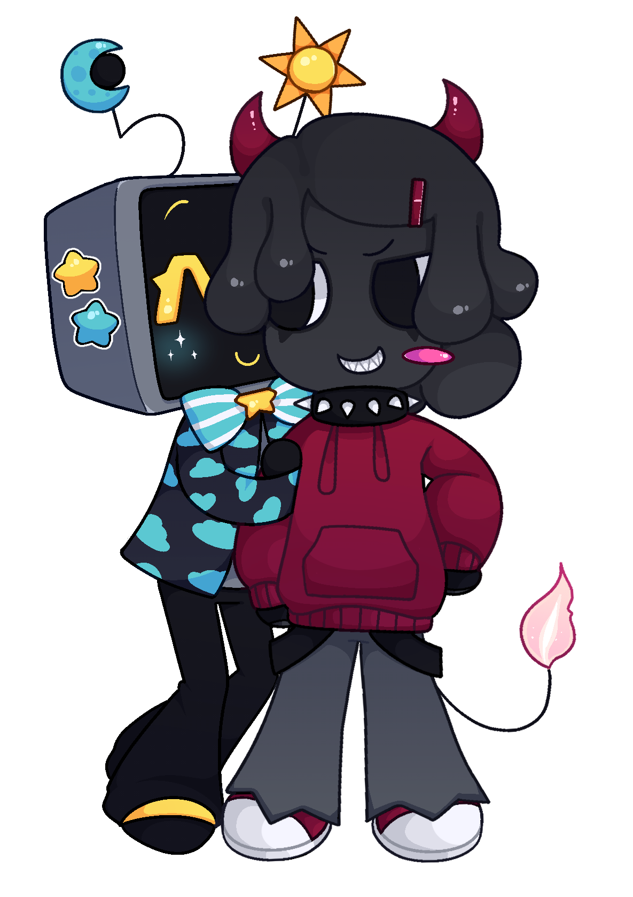

Hola!!! esta es mi primera pagina web
solo fue hecha por entretenimineto y para ser
un poco mas computin...
ademas... mi polola tiene una tmb
y no podia quedarme atras!!!
dibujo de mi hecho por ella (GRAN ARTISTA) --------->
PD: hola emelimary te quede muy lindo
Esto es algo mas que nada personal
Y Q IGUAL HACE TIEMPO QUERIA HACER
asi q solo pondre cosas sobre mi hasta q piense en algo mejor!!
tengo 20...
estudio informatica...
me gusta pokemon...
me gusta deltarune...
me gusta undertale...
yy ya creo q eso es todo de mi...
mi discord: tomi19r5h





Como dije q parte de mi motivacion para hacer esto fue mi polola
le dedicare una gran parte de este sitio a guardar
los dibujos q me ha hecho y cosas de ella...
↓↓↓↓↓↓↓↓↓↓↓↓↓↓↓↓↓↓↓↓↓↓↓↓↓
GF WEBSITE HERE!!!!
↑↑↑↑↑↑↑↑↑↑↑↑↑↑↑↑↑↑↑↑↑↑↑↑↑




© 2026 - todos los derechos reservados ☆☆☆